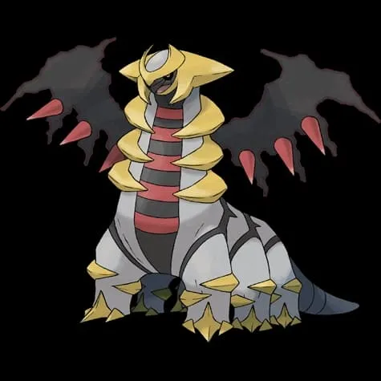
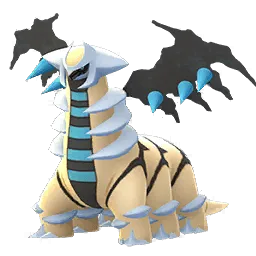

🧭 Quick Navigation
📖 Introduction
Giratina (Altered Forme) is one of the most defensive Legendary Pokémon available in Pokémon GO raids. Unlike its Origin Forme counterpart, Altered Giratina focuses on durability rather than attack power, making it a long and challenging battle for trainers.
Unlike most raid bosses, it relies on high defense rather than attack power, making battles longer and requiring strong, well-prepared teams to defeat efficiently.
Because of its dual Ghost and Dragon typing, Giratina has several important weaknesses that trainers can take advantage of during raid battles. Pokémon with strong Dark, Ghost, or Dragon-type attacks are especially effective at dealing heavy damage.
This guide covers everything trainers need to know to defeat Altered Giratina in Pokémon GO, including the best raid counters, optimal strategies, and catch CP ranges to identify high-IV Pokémon after the raid.
🧠 Giratina (Altered Forme) Raid Strategy
Giratina in its Altered Forme is a **Ghost/Dragon‑type Legendary raid boss** that appears in 5‑Star Raids in Pokémon GO. Its typing gives it a unique combination of strengths and weaknesses that you must understand before joining a raid.
This raid can be defeated efficiently by trainers who bring counters that exploit Giratina’s specific weaknesses. Using strong attackers with weather‑boosted moves will shorten the battle and improve your odds of success. :contentReference[oaicite:2]{index=2}
- 🦇 Ghost‑, Dragon‑, Dark‑, Ice‑ and Fairy‑type moves deal super‑effective damage
- 🐉 Avoid using types Giratina resists like Fighting, Normal, Poison, Ghost (against Ghost attacks), or Water
- ⚠ Make sure your counters have appropriate movesets for maximum damage
Related guides: Mega Abomasnow | Mega Absol
💡 Expert Insight
Altered Forme Giratina is known for its exceptional bulk, making it one of the longest raids in terms of battle duration. Its Ghost and Dragon typing leaves it weak to Dark, Ghost, Ice, and Dragon moves.
Dark-type Pokémon are often the safest choice due to their survivability, while Ghost and Dragon types can provide higher damage output. Efficient team coordination is essential to complete this raid quickly.
📊 Altered Giratina Stats
| Type | Dragon / Ghost |
| Max CP | 3379 |
| Weather Boost | Windy, Foggy |
| Shiny | Yes |
| Base Attack | 187 |
| Base Defence | 225 |
| Base Stamina | 284 |
Giratina Altered has very high defensive stats, which makes the raid battle last longer compared to many other legendary raids.
🎯 Catch CP & 100% IV
After defeating the raid boss, you will get a chance to catch Giratina.
CP Range:
- No Weather Boost: 1,848-1,931 CP
- Weather Boost: 2,310-2,414 CP
100% IV:
- 1931 (Normal)
- 2414 (Weather Boosted)
Use:
- Golden Razz Berry
- Curveball Excellent Throws
A CP of 1931 indicates a perfect IV Altered Giratina without weather boost.
Why Giratina (Altered) is Hard to Defeat
Giratina (Altered Forme) has extremely high defensive stats, which makes it one of the tankiest raid bosses in Pokémon GO. Even with super-effective counters, battles can take longer than usual. Trainers need strong, high-level Pokémon and proper team coordination to defeat it before the timer runs out.
⚠️ Altered Giratina Weaknesses
Giratina (Altered Forme) is weak to Dark, Ghost, Dragon, Fairy and Ice type moves. Using these types will significantly increase your damage output during the raid.
Using Pokémon with these types will deal super effective damage during the raid battle:
| Category | Details |
|---|---|
| ❌ Weak To: |
 Dark • Dark •
 Dragon • Dragon •
 Fairy • Fairy •
 Ghost • Ghost •
 Ice Ice
|
| ✅ Resistant To: |
 Fighting • Fighting •
 Normal • Normal •
 Bug • Bug •
 Electric • Electric •
 Grass • Grass •
 Fire • Fire •
 Poison • Poison •
 Water Water
|
Because of this, avoid using Normal or Fighting-type attackers during the raid.
Notes:Ghost and Dark-type attackers are usually the best options because they deal super effective damage and often have strong charged moves.
🗡️ Best Counters for Altered Giratina
To defeat Giratina quickly, trainers should focus on high-DPS Pokémon that exploit its weaknesses. Dark and Ghost type pokemon like Darkrai and Mega Gengar are excellent because they deal super-efective damage while resisting some of Giratina's attacks. Dragon type Pokemon like Rayquaza deal high damage but are also vulnerable, so they require careful usage.
🐉 Dragon-type Counters
Dragon-type Pokémon are among the strongest options because Dragon attacks deal super-effective damage to Giratina. However, keep in mind that Dragon-types also take super-effective damage from Giratina’s Dragon-type moves. This creates a high-risk, high-reward scenario.
Top Dragon attackers typically include high-attack Pokémon with strong fast and charged Dragon-type moves. These attackers maximize DPS but require good dodging skills to survive longer in battle.
- Garchomp: (Dragon Tail / Outrage)
- Rayquaza: (Dragon Tail / Breaking Swipe)
Strong Dragon damage.
Extremely high Dragon-type DPS.
🌑 Dark-type Counters
Dark-type Pokémon are excellent choices because they resist Giratina’s Ghost-type attacks while dealing super-effective damage in return. This makes them safer and more consistent compared to Dragon-types in certain moveset matchups.
Dark attackers provide balanced survivability and damage output, making them ideal for smaller raid groups.
- Hydreigon: (Bite / Brutal Swing)
- Darkrai: (Snarl / Shadow Ball)
Reliable Dark-type raid attacker.
High Dark-type damage output.
👻 Ghost-type Counters
Ghost-type attackers hit Giratina for super-effective damage. However, since Giratina itself is a Ghost-type, Ghost attackers will also take increased damage from its Ghost-type moves. These counters are effective but may faint faster without dodging.
- Chandelure: (Hex / Shadow Ball)
- Gengar: (Lick / Shadow Ball)
Powerful Ghost-type attacker.
One of the strongest Ghost attackers.
❄️ Ice-type Counters
Ice-type Pokémon take advantage of Giratina’s Dragon typing. In snowy weather, Ice attackers receive a damage boost, making them very powerful options. Fairy-types are also strong choices, especially during cloudy weather, where Fairy moves are boosted.
- Black Kyurem: (Dragon Tail / Freeze Shock)
- White Kyurem: (Ice Fang / Ice Burn)
Also boosts Ice-type teammates
Very strong Ice-type counter
🔥 Why These Counters Are Effective
Giratina (Altered Forme) is weak to Ghost, Dragon, Fairy, Dark, and Ice‑type attacks. Counters that maximize their same type attack bonus (STAB) and match these weaknesses will deal the most damage. :contentReference[oaicite:3]{index=3}
- 🌑 Dark‑types resist Ghost and deal great damage
- 🐉 Dragon‑types exploit the Dragon weakness but be cautious of Ghost moves
- 👻 Ghost‑types are super‑effective against Giratina’s Ghost typing
- ❄️ Ice‑types hit its Dragon typing well
- ✨ Fairy‑types provide balanced coverage against Dragon
🔥 Difficulty
Despite not hitting as hard as some other Legendary bosses, Giratina (Altered) makes up for it with sheer bulk. The real challenge in this raid is the clock, not survival. Even well-prepared groups may notice the timer getting tight if they don’t bring enough high-DPS Ice or Dragon attackers.
🏆 Best Regular Counters
Regular Pokémon that amplify the right types give you a powerful edge. Below are top Regular counters with short notes on why they excel.
| Pokémon | 🗡️ Fast Moves | 💥 Charged Moves | 🔄 Elite Moves | 🏆 Best Moves | 🧪 Why This Counter Works |
|---|---|---|---|---|---|
| Primal Groudon | Mud Shot / Dragon Tail | Earthquake / Fire Blast / Solar Beam | Precipice Blades / Fire Punch | Dragon Tail and Solar Beam | Primal Groudon deals mostly neutral damage and does not exploit Giratina’s key weaknesses, making it a suboptimal raid choice. |
| Eternatus | Poison Jab / Dragon Tail | Flamethrower / Dragon Pulse / Sludge Bomb | Dynamax Cannon | Dragon Tail and Dynamax Cannon | Dragon Tail and Dynamax Cannon deal strong super-effective Dragon damage, exploiting Giratina’s Dragon typing for high sustained DPS. |
| Black Kyurem | Shadow Claw / Dragon Tail | Stone Edge / Blizzard / Iron Head / Outrage / Fusion Bolt / Freeze Shock | None | Dragon Tail and Freeze Shock | Dragon Tail and Freeze Shock provide heavy Dragon and Ice-type damage, both of which hit Giratina super effectively. |
| White Kyurem | Dragon Breath / Steel Wing / Ice Fang | Ancient Power / Blizzard / Dragon Pulse / Focus Blast / Fusion Flare / Ice Burn | None | Ice Fang and Ice Burn | Ice Fang and Ice Burn exploit Giratina’s Dragon typing while delivering strong consistent DPS. |
| Dawn Wings Necrozma | Shadow Claw / Metal Claw / Psycho Cut | Dark Pulse / Iron Head / Outrage / Future Sight / Moongeist Beam | None | Shadow Claw / Metal Claw and Moongeist Beam | Shadow Claw and Moongeist Beam hit Giratina for super-effective Ghost damage, making it one of the strongest raid counters available. |
| Origin Palkia | Dragon Breath / Dragon Tail | Aqua Tail / Fire Blast / Hydro Pump / Draco Meteor | Spacial Rend | Dragon Tail and Draco Meteor | Dragon Tail and Draco Meteor deliver powerful Dragon-type damage, directly targeting Giratina’s Dragon weakness. |
| Dialga Origin | Dragon Breath / Metal Claw | Iron Head / Thunder / Draco Meteor | Roar of Time | Dragon Breath / Metal Claw and Roar of Time | Dragon Breath and Roar of Time deal consistent Dragon-type damage while Dialga’s Steel typing resists Dragon attacks. |
| Zacian | Metal Claw / Air Slash | Play Rough / Close Combat / Giga Impact / Behemoth Blade | None | Air Slash and Play Rough | Play Rough deals super-effective Fairy-type damage, one of Giratina’s key weaknesses, while Zacian maintains strong bulk. |
| Haxorus | Counter / Dragon Tail | Earthquake / Night Slash / Dragon Claw / Surf | Breaking Swipe | Dragon Tail and Breaking Swipe | High-attack Dragon-type moves hit Giratina super effectively and provide excellent raid DPS. |
| Regidrago | Bite | Hyper Beam / Vise Grip / Outrage / Dragon Pulse / Breaking Swipe | Dragon Breath / Dragon Energy | Bite and Dragon Energy | Dragon Energy provides strong Dragon-type burst damage, but Regidrago’s low bulk makes it risky. |
| Rayquaza | Air Slash / Dragon Tail | Aerial Ace / Dragon Ascent / Ancient Power / Outrage | Hurricane / Breaking Swipe | Dragon Tail and Outrage | Dragon Tail and Outrage deliver extremely high Dragon-type DPS, one of the strongest damage options against Giratina. |
👤 Best Shadow Counters
Shadow Pokémon that amplify the right types give you a powerful edge. Below are top Shadow counters with short notes on why they excel.
| Pokémon | 🗡️ Fast Moves | 💥 Charged Moves | 🔄 Elite Moves | 🏆 Best Moves | 🧪 Why This Counter Works |
|---|---|---|---|---|---|
| Shadow Hydreigon | Bite / Dragon Breath | Fly / Flash Cannon / Dragon Pulse / Dark Pulse | Brutal Swing | Bite and Brutal Swing | Shadow boost increases Brutal Swing’s Dark-type damage, allowing it to hit Giratina’s Ghost typing super effectively. |
| Shadow Garchomp | Mud Shot / Dragon Tail | Earthquake / Sand Tomb / Fire Blast / Outrage / Breaking Swipe | Earth Power | Dragon Tail and Outrage | Shadow boost amplifies Dragon-type damage, making it a powerful high-risk, high-reward counter. |
| Shadow Weavile | Ice Shard / Feint Attack / Snarl | Focus Blast / Avalanche / Triple Axel / Foul Play | None | Ice Shard and Avalanche | Ice Shard and Avalanche exploit Giratina’s Dragon typing while Shadow boost increases overall DPS. |
| Shadow Absol | Psycho Cut / Snarl | Megahorn / Thunder / Dark Pulse / Payback | Brutal Swing | Snarl and Brutal Swing | Brutal Swing deals super-effective Dark damage while Shadow boost maximizes burst output. |
| Shadow Dragonite | Steel Wing / Dragon Tail / Dragon Breath | Hyper Beam / Superpower / Hurricane / Thunder Punch / Outrage / Dragon Claw | Draco Meteor / Dragon Pulse | Dragon Tail and Outrage | Shadow boost enhances Dragon-type attacks, delivering heavy super-effective damage. |
| Shadow Tyranitar | Iron Tail / Dragon Breath / Bite | Stone Edge / Fire Blast / Crunch / Brutal Swing | Smack Down | Bite and Brutal Swing | Bite and Brutal Swing hit Giratina’s Ghost typing super effectively while Shadow boost increases DPS. |
| Shadow Dialga | Dragon Breath / Metal Claw | Iron Head / Thunder / Draco Meteor | None | Dragon Breath / Metal Claw and Draco Meteor | Dragon-type attacks exploit Giratina’s weakness while Steel typing provides defensive utility. |
| Shadow Salamence | Fire Fang / Dragon Tail / Bite | Fly / Fire Blast / Hydro Pump / Draco Meteor / Brutal Swing / Crunch | Outrage | Dragon Tail and Outrage | Shadow-boosted Dragon-type attacks deliver massive super-effective damage, making it a top raid attacker. |
| Shadow Palkia | Dragon Breath / Dragon Tail | Fire Blast / Hydro Pump / Aqua Tail / Draco Meteor | None | Dragon Tail and Draco Meteor | Dragon Tail and Draco Meteor deal powerful Dragon-type damage enhanced by Shadow’s attack boost. |
| Shadow Darkrai | Snarl / Feint Attack | Focus Blast / Shadow Ball / Dark Pulse | Sludge Bomb | Snarl and Dark Pulse | Snarl and Dark Pulse hit Giratina’s Ghost typing super effectively, and Shadow boost increases burst damage. |
⚡ Best Mega Counters
Mega Pokémon that amplify the right types give you a powerful edge. Below are top Mega counters with short notes on why they excel.
| Pokémon | 🗡️ Fast Moves | 💥 Charged Moves | 🔄 Elite Moves | 🏆 Best Moves | 🧪 Why This Counter Works |
|---|---|---|---|---|---|
| Mega Rayquaza | Air Slash / Dragon Tail | Aerial Ace / Dragon Ascent / Ancient Power / Outrage | Hurricane / Breaking Swipe | Dragon Tail and Outrage | Mega Rayquaza provides extremely high Dragon-type DPS and boosts all Dragon-type allies in the raid. |
| Mega Garchomp | Mud Shot / Dragon Tail | Earthquake / Sand Tomb / Fire Blast / Outrage / Breaking Swipe | Earth Power | Dragon Tail and Outrage | Strong Dragon-type damage combined with Mega team boost makes it highly effective against Giratina. |
| Mega Absol | Psycho Cut / Snarl | Megahorn / Thunder / Dark Pulse / Payback | Brutal Swing | Snarl and Brutal Swing | Dark-type damage hits Giratina’s Ghost typing super effectively while boosting Dark-type teammates. |
| Mega Gengar | Hex / Shadow Claw / Sucker Punch | Focus Blast / Drain Punch / Sludge Bomb / Shadow Ball | Lick / Sludge Wave / Shadow Punch / Psychic / Dark Pulse | Shadow Claw and Shadow Ball | Ghost-type moves deal super-effective damage and Mega boost enhances other Ghost attackers. |
| Mega Salamence | Fire Fang / Dragon Tail / Bite | Fly / Fire Blast / Hydro Pump / Draco Meteor / Brutal Swing / Crunch | Outrage | Dragon Tail and Outrage | Delivers high Dragon-type DPS and boosts Dragon teammates for faster raid clears. |
| Mega Tyranitar | Iron Tail / Bite / Dragon Breath | Stone Edge / Fire Blast / Crunch / Brutal Swing | Smack Down | Bite and Brutal Swing | Bite and Brutal Swing deal strong Dark-type damage while boosting Dark allies. |
| Mega Gardevoir | Magical Leaf / Charge Beam / Confusion / Charm | Shadow Ball / Psychic / Triple Axel / Dazzling Gleam | Synchronoise | Charm and Shadow Ball / Dazzling Gleam | Charm and Dazzling Gleam deal super-effective Fairy-type damage while boosting Fairy teammates. |
| Mega Latios | Zen Headbutt / Dragon Breath | Solar Beam / Psychic / Dragon Claw / Aura Sphere | Luster Purge | Dragon Breath and Luster Purge | Dragon-type attacks exploit Giratina’s weakness while Mega boost supports Dragon teammates. |
| Mega Houndoom | Fire Fang / Snarl | Fire Blast / Flamethrower / Crunch / Foul Play | None | Snarl and Foul Play | Dark-type moves hit Giratina super effectively and Mega boost enhances Dark-type allies. |
👥 Raid Difficulty & Recommended Team Size
Altered Forme Giratina is a **5‑Star Legendary Raid boss**, and while it’s not the toughest Legendary, it still benefits from multiple trainers.
| Player Level | Recommended Trainers |
|---|---|
| Beginner | 6–8 players |
| Intermediate | 4–6 players |
| High‑Level | 2–3 players (with optimal counters) |
With weather boosts and good counters, experienced players can efficiently defeat Giratina with fewer people. :contentReference[oaicite:5]{index=5}
💊 Revive & Potion Cost
- Average revives used: 8–14
- Average potions used: 10–18
- Dodging significantly reduces resource usage
- Using Mega Pokémon reduces total relobbies
❌ Common Raid Mistakes
Be cautious if Giratina carries Ancient Power, which can threaten Ice type attackers.
Raid Strategy
Focus on using Dark and Fairy type Pokemon for safer battles, as they offer better survivability. Dragon and Ghost-types provide higher damage but can faint quickly due to Giratina’s moves. Using Mega Evolutions boosts team damage and helps finish the raid faster.
🎯 How to Catch Giratina (Altered Forme)
- 🟡 Use Golden Razz Berry for a higher catch rate
- 🎯 Aim for Excellent Curveball Throws
- ⏱️ Time throws after it attacks for better accuracy
- ✨ Shiny chance is boosted compared to usual raids
👥 Raid Difficulty & Trainers Needed
👥 Recommended group size
- 3–4 experienced trainers
- 5–6 trainers for safer victory
👑 Ideal Group Size
Giratina (Altered) is technically duo-able by high-level trainers with top-tier counters and ideal weather conditions. However, most players should aim for:
- 2 Trainers: Very difficult, requires maxed counters
- 3 Trainers: Challenging but possible
- 4–6 Trainers: Comfortable clear
- 7+ Trainers: Easy win
🧠 Raid Strategy & Advanced Tips
Defeating Giratina (Altered Forme) efficiently requires more than just strong counters. Because of its bulk, optimizing your strategy can significantly reduce raid time.
- Lead with your Mega Pokémon (preferably Mega Rayquaza).
- Use Dragon / Ghost attackers to maximize DPS.
- Dodge Dragon Claw if possible — it comes very fast.
- Rejoin quickly if your team faints.
- In Windy or Fog weather, Giratina becomes stronger — but so do your counters.
Altered Giratina’s Ghost and Dragon dual-typing gives it significant resistance to many common attacking types, but a particularly deep weakness to Ghost and Dragon moves. Pokémon like Shadow Mewtwo with Shadow Ball, Gengar with Lick + Shadow Ball, and Dialga with Dragon Tail + Draco Meteor stand out as excellent choices because they hit Giratina’s typing for super-effective damage while still being resilient enough to survive charged attacks.
Weather plays a crucial role in this raid. During Windy weather, Ghost-type moves receive a boost, making counters like Gengar and Chandelure even more effective. In Snowy or Partly Cloudy weather, Dragon-type moves get a boost, which can improve performance of Dragon counters like Palkia or Rayquaza. Trainers should check the weather forecast before the raid and adjust their lineup to take advantage of these weather bonuses.
Dodging heavy charged attacks like Dragon Claw, Shadow Ball, or Shadow Sneak can significantly extend your team’s survivability, especially in smaller raid groups. While not every move needs to be dodged, learning to time quick dodges for the biggest charged attacks helps your counters stay alive longer and deal more total damage.
When building your team, lead with your highest DPS counters that exploit Altered Giratina’s weaknesses. If your strongest counters start to faint, rotate in secondary attackers that still hit Giratina super-effectively but have better bulk. For large raid groups, coordinating move sets and spacing out counters by role — primary heavy hitters first, followed by support attackers — can speed up the clear and save valuable moves.
👶 Beginner Strategy
For newer players, the safest way to defeat Giratina is to raid with 5–7 trainers. Use Dark or Ghost Pokémon and revive fainted Pokémon quickly.
⚙️ Intermediate Strategy
Level 35+ trainers with optimized counters can defeat Giratina with 3–4 players. Mega Evolutions and friendship bonuses can greatly increase damage output.
🏆 Expert Strategy
Experienced players can defeat Giratina Altered Forme in a duo if both trainers use high-level counters such as Mega Rayquaza, Darkrai, and Hydreigon. Dodging charged attacks can help keep Pokémon alive longer and increase total damage.
🧩 Best Team Compositions
For balanced performance, mix high-DPS attackers with slightly bulkier counters. For example:
- Lead with your strongest Dragon attacker
- Follow with Dark or Fairy types for stability
- Keep a second Dragon attacker as backup
Avoid using Pokémon that deal resisted damage, as this will dramatically increase raid duration.
Best 3–4 Trainer Team
- Mega Rayquaza (Dragon Tail + Outrage)- Mega boost helps other Dragon attackers
- Black Kyurem
- Dawn Wings Necrozma
- Palkia / Rayquaza
Budget Team
If you don't have legendary Pokémon, these options still work well in raids:
- Mamoswine
- Weavile
- Hydreigon (Bite + Brutal Swing)
- Dragonite
🛡️ Manage Dodging Carefully
If Giratina has Dragon-type charged moves, Dragon counters may faint quickly. Dodging charged attacks can help preserve your strongest attackers. If using Dark-types, you can play more aggressively since they resist Ghost damage.
🌦️ Weather Boost
Weather conditions can dramatically impact your battle performance:
🌨️ Snowy Weather
- boosts Ice-type counters.
🌬️ Windy Weather
- boosts Dragon-type moves.
☁️ Cloudy Weather
- boosts Fairy-type counters.
🌫️ Foggy Weather
- boosts Ghost- and Dark-type moves.
When boosted, Giratina will be stronger but will also appear with higher CP when caught.
🌀 Altered Giratina Moveset
Altered Giratina has several powerful Ghost and Dragon-type attacks that can deal heavy damage during raids.
🗡️ Fast Moves
- Shadow Claw
- Dragon Breath
💥 Charged Moves
- Dragon Claw
- Ancient Power
- Shadow Sneak
🔄 Elite Moves
- Shadow Force
Most Dangerous Moveset: Dragon Claw is fast and can quickly damage Dragon attackers.
⚔️ Is Giratina Altered Good in PvP and PvE?
PvE Performance
Giratina Altered is not a top raid attacker. Its attack stat is relatively low compared to other dragons. However, it is still useful in some situations.
PvP Performance
Giratina Altered is one of the strongest Pokémon in PvP, especially in:
- Ultra League
- Master League
Its bulk and moves like Dragon Claw and Shadow Sneak make it extremely difficult to defeat.
✨ Can Altered Giratina Be Shiny in Pokémon GO?
Yes, trainers have a chance to encounter a Shiny Giratina (Altered Forme) after successfully defeating the raid boss. Shiny Giratina features a striking color change with bright blue highlights instead of the standard yellow accents.
While the shiny encounter is not guaranteed, Legendary raids generally offer better shiny odds compared to wild encounters. Completing multiple raids will increase the chances of obtaining a shiny Giratina.
Because of its unique appearance and rarity, shiny Giratina is highly sought after by collectors and competitive Pokémon GO players.
🚶 Buddy Distance
20 km (per Pokémon GO buddy distance)
⚖️ Shadow & Mega Comparison
🧬 Best Mega Evolutions
Recommended Megas to use against Altered Giratina:
- Rayquaza, Garchomp, Salamence, Latios – 🐉 Dragon boost
- Absol, Tyranitar, Houndoom – 🌑 Dark boost
⚔️ Battle tips
- Use Ghost or Dark attackers for maximum damage.
- Dodge charged attacks when possible.
- Mega evolve Ghost or Dragon Pokémon to boost damage.
- Coordinate with teammates for faster raid completion.
📌 Why Raid Altered Giratina?
Yes, for several reasons:
- It is a strong PvP Pokémon
- It is a Legendary Pokémon
- There is a chance to encounter a shiny version
However, if your focus is raids, the Origin Forme is usually more powerful.
🎁 Raid Rewards
Defeating Giratina (Altered Forme) in a 5-Star Raid Battle in Pokémon GO rewards trainers with several valuable items. The exact number of rewards may vary depending on raid performance, damage contribution, and friendship bonuses.
| Reward | Typical Amount |
|---|---|
| Golden Razz Berry | 3 – 12 |
| Rare Candy | 3 – 9 |
| Revive | 6 – 15 |
| Hyper Potion | 6 – 15 |
| Fast TM | 0 – 2 |
| Charged TM | 0 – 2 |
| Stardust | 1000 |
Premier Balls
After the raid battle, trainers receive Premier Balls used to catch Giratina. The number of Premier Balls usually ranges between 8 and 16 depending on:
- Damage contribution during the raid
- Gym control by your team
- Friendship bonus with raid participants
- Speed of defeating the raid boss
⚔️ Can Giratina Be Duoed?
Yes. Giratina Altered Forme can be defeated by two experienced trainers using strong counters and Mega boosts. However, soloing this raid boss is currently not possible due to its high defense and stamina.
🎯 Advanced Raid Tips
- Use Mega Evolutions to boost team damage.
- Dark and Ghost attackers deal the most consistent damage.
- Coordinate attacks with friends for faster raids.
- Use Golden Razz Berries when catching Giratina.
- Aim for excellent curveball throws to improve catch rate.
Pro Tips
- Use Mega Evolutions to boost team damage.
- Avoid using Fighting and Normal type Pokemon, as Giratina resists them.
- Bring at least 4-6 trainers for a smooth raid experience.
Altered vs Origin Forme
While Giratina (Altered Forme) is highly defensive and better suited for PvP battles, its Origin Forme is more offensive and performs better in raids. However, Altered Forme remains a valuable addition for trainers focused on PvP leagues.
🖼️ Regular vs Shiny Altered Giratina Forms
Shiny Giratina features a striking color change with bright blue highlights instead of the standard yellow accents.

Altered Giratina
Images are used for informational and educational purposes only. All rights belong to their respective owners.

Shiny Altered Giratina
Images are used for informational and educational purposes only. All rights belong to their respective owners.
❓ FAQ
Can Altered Giratina be shiny in Pokémon GO?
Shiny Altered Giratina appears with a teal body and different accent colors in Pokémon GO.
What is the best moveset of Altered Giratina?
The best moveset of Giratina are Dragon Tail under Fast Attack and Shadow Force under Elite TM Attack.
How many trainers are needed to defeat Altered Giratina?
With strong counters, 3–5 trainers can defeat it efficiently. Proper type advantage significantly reduces battle time.
Is Altered Giratina a difficult raid boss?
Altered Giratina has high bulk and strong Dragon-type moves. Proper counters and dodging charged moves are essential for a successful raid.
🏁 Conclusion
Altered Giratina remains one of the most unique Legendary Pokémon in Pokémon GO. By understanding its weaknesses and using the correct counters, trainers can defeat this powerful Ghost/Dragon Pokémon and add it to their collection.
⚡ Quick picks
- Best Mega Team: Rayquaza, Garchomp, Gengar
- Best Shadow Team: Garchomp, Palkia, Salamence
- Best Regular Team: Eternatus, Black Kyurem, White Kyurem